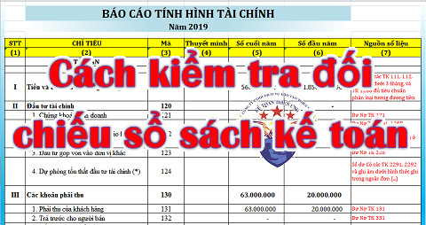

Hướng dẫn cách kiểm tra đối chiếu số sách kế toán: Kiểm tra đối chiếu số liệu các sổ chi tiết, tổng hợp, thuế GTGT, hàng tồn kho, Báo cáo tài chính...cơ bản:
- Kiểm tra đối chiếu các nghiệp vụ kinh tế phát sinh (Hóa đơn đầu ra, đầu vào, chứng từ ...) so với các nghiệp vụ đã hạch toán vào Sổ sách.
- Kiểm tra đối chiếu công nợ khách hàng.
- Kiểm tra các khoản phải trả.
- Kiểm tra số liệu giữa Tờ khai thuế và Sổ tài khoản 133, 333 (Thuế GTGT, TNCN)
- Kiểm tra Quyền hóa đơn (các số hóa đơn đã sử dụng, xóa bỏ ...) xem có khớp với Tờ khai và Báo cáo tình hình sử dụng hóa đơn.
- Kiểm tra Bảng nhập xuất tồn với Sổ TK 156.
- Kiểm tra lại bảng lương xem ký có đầy đủ, số liệu trên sổ cái 334 và bảng lương có khớp.
- Kiểm tra tra đối chiếu giữa sổ chi tiết với sổ tổng hợp tài khoản (sổ cái).
- Trên CĐPS thì tổng phát sinh bên Nợ phải bằng tổng phát sinh bên Có
- Tổng PS Nợ trên CĐPS bằng tổng PS Nợ trên NKC
- Tổng PS Có trên CĐPS bằng Tổng PS Có trên NKC
- Các tài khoản loại 1 và loại 2 không có số dư bên Có. Trừ một số tài khoản như 131, 214,..
- Các tài khoản loại 3 và loại 4 không có số dư bên Nợ. Trừ một số tài khoản như 331, 3331, 421,..
- Các tài khoản loại 5 đến loại 9 cuối kỳ không có số dư.
- TK 112 phải khớp với Sổ phụ ngân hàng.
- TK 133, 3331 phải khớp với chỉ tiêu trên tờ khai thuế.
- TK 156 phải khớp với dòng tổng cộng trên Báo cáo NXT kho.
- TK 242 phải khớp với dòng tổng cộng trên bảng phân bổ 242.
- TK 211 , 214 phải khớp với dòng tổng cộng trên Bảng khấu hao 211.
------------------------------------------------------------------------
|
Nguyên tắc chung: Tất cả các tài khoản kế toán phải được đối chiếu trùng khớp |
|
| Cột 1 | Cột 2 |
| Trên Các sổ | Về các chỉ tiêu |
| Bảng cân đối phát sinh TK | Số dư đầu kỳ |
| Sổ chi tiết (nếu có) | Số phát sinh tăng trong kỳ |
| Sổ cái tài khoản | Số phát sinh giảm trong kỳ |
| Bảng tổng hợp (nếu có) | Số dư cuối kỳ |
| (Các chỉ tiêu ở cột 2 trên các sổ liên quan ở cột 1 phải bằng nhau) | |
|
Dùng: Bảng cân đối phát sinh tài khoản để kiểm tra tổng quan: * Nguyên tắc:
+ Tổng Số Dư Nợ đầu kỳ = Tổng số Dư Có đầu kỳ = Số dư cuối kỳ trước kết chuyển sang.
+ Tổng Phát Sinh Bên Nợ = Tổng Phát Sinh Bên Có = Tổng phát sinh Bên Nợ hoặc Bên Có ở Sổ Nhật Ký Chung (Trên sổ NKC ∑ PS bên Nợ = ∑ PS bên Có) + Tổng Số dư Nợ cuối kỳ = Tổng số dư Có cuối kỳ. * Số dư cuối kỳ của từng TKKT trên Bảng CĐ PSTK phải bằng số dư cuối kỳ của từng Sổ cái TK * Các TKKT đầu 5,6,7,8,9: không có số dư |
|
1. Tiền Mặt TK 111
+ Đảm bảo: Nếu có số dư thì sẽ luôn dư bên Nợ
+ Nếu công ty các bạn làm đúng NVKTPS thì số dư cuối kỳ trên sổ quỹ tiền mặt phải đúng với số tồn quỹ thực tế thông qua bảng kiểm kê quỹ mẫu 08a-TT (Nếu phát sinh chênh lệch (thừa thiếu) thì phải hạch toán phần chênh lệch đó.
+ Khi làm sổ quỹ tiền mặt: tiền không được âm kể cả là âm cuối kỳ hay âm theo thời điểm. Nếu có âm thì phải tiến hành tìm nguyên nhân rồi xử lý:
| Nguyên Nhân | Xử Lý |
| Do hạch toán phiếu chi trước phiếu thu sau | Đảo lại ngày /thứ tự ghi sổ |
| Do dùng tiền của 1 đối tượng khác (GĐ/NV/ai đó..) | Phải làm HĐ vay mượn tiền để bổ sung tiền trước thời điểm bị âm. |
| Do bán HH – DV không xuất hóa đơn nên vẫn có tiền để chi |
2. Tiền Gửi Ngân Hàng TK 112
+ Đảm bảo: Nếu có số dư thì sẽ luôn dư bên Nợ
+ Sổ tiền gửi ngân hàng cần được đối chiếu với sổ phụ hoặc bảng sao kê của ngân hàng
+ Số dư cuối kỳ TK 112 trên sổ sách phải = Số dư cuối kỳ ở Sổ Phụ Ngân Hàng hoặc sao kê
3. Tài khoản 131 và TK 331 - Công nợ phải thu và phải trả
- Với tài khoản tổng hợp thì số dư có thể nằm bên Nợ hoặc bên Có hoặc cả 2 bên
- Với tài khoản chi tiết thì chỉ có thể dư 1 bên (Nợ hoặc Có)
- TK 131: Dư nợ là phải thu, dư Có là nhận tiền trước của KH.
- TK 331: Dư có là phải trả, dư Nợ là trả trước tiền cho NCC.
- Với những khách hàng hoặc nhà cung cấp còn số dư bên Nợ hoặc bên Có thì cần phải có biên bản đối chiếu công nợ (với từng KH/NCC cụ thể) để so sánh giữa số liệu sổ sách và số công nợ thực tế của KH/NCC (Công nợ phải thu của công ty bán phải bằng công nợ phải trả của công ty mua và ngược lại).
Nếu có sự sai sót phải tiến hành kiểm tra từng nghiệp vụ mua bán trên sổ chi tiết công nợ của KH/NCC có số liệu không trùng khớp đó.
4. Thuế GTGT được khấu trừ - TK 133
+ Đảm bảo: Nếu có số dư thì sẽ luôn dư bên Nợ
* Nếu tài khoản 133 có số dư cuối kỳ thì số dư này phải bằng 2 chỉ tiêu:
+ Chỉ tiêu số [43] - số thuế GTGT còn được khấu trừ chuyển kỳ sau trên tờ khai thuế GTGT của Qúy 4 (nếu DN KK theo quý) hoặc tháng 12 (nếu DN KK theo tháng) của Năm Báo cáo
+ Chỉ tiêu [22] - Thuế GTGT còn được khấu trừ kỳ trước chuyển sang trên tờ khai thuế GTGT của Qúy 1 (nếu DN KK theo quý) hoặc tháng 1 (nếu DN KK theo tháng) của Năm sau
* Nếu có sự chênh lệch thì phải xác định nguyên nhân:
+ Chỉ tiêu [22] - Thuế GTGT còn được khấu trừ kỳ trước chuyển sang trên tờ khai thuế GTGT của Qúy 1 (nếu DN KK theo quý) hoặc tháng 1 (nếu DN KK theo tháng) của Năm sau
+ Nếu do KK sai => làm tờ khai điều chỉnh
+ Nếu do hạch toán ghi sổ sai => phải điều chỉnh lại số liệu trên sổ sách
+ Do kết chuyển sót => thực hiện lại
Ví Dụ: Qúy 1: mua hàng của công ty A 10tr – Nợ 133: 1tr – Bán hàng cho công ty B 10tr: Có 3331: 1tr => Đầu ra = Đầu vào => không phải nộp thuế.
Nhưng đến Qúy 2: Không phát sinh mua hàng – cũng không phát sinh bán hàng. Chỉ phát sinh duy nhất 1 nghiệp vụ là công ty chúng ta trả lại hàng cho công ty A: 1tr - tiền thuế => phát sinh hạch toán bên Có 133: 1tr.
Nếu cuối Quý 2:
Các bạn không thực hiện kết chuyển thì TK 133 sẽ dư Có: 1tr => Sai
Vì vậy
Đến cuối Quý 2 phải kết chuyển từ bên Có TK 133 Sang bên Có TK 3331:
Nợ TK 133 – Có TK 3331: 1tr = > Phải nộp 1tr vào Ngân sách Nhà Nước
=> TK 133 hết số dư, vì:
Khi trả lại hàng ghi Có TK 133: 1tr; khi kết chuyển ghi Nợ TK 133: 1tr
Vậy là TK 133 nếu có số dư sẽ luôn dư Nợ.
+ Nếu do hạch toán ghi sổ sai => phải điều chỉnh lại số liệu trên sổ sách
+ Do kết chuyển sót => thực hiện lại
Ví Dụ: Qúy 1: mua hàng của công ty A 10tr – Nợ 133: 1tr – Bán hàng cho công ty B 10tr: Có 3331: 1tr => Đầu ra = Đầu vào => không phải nộp thuế.
Nhưng đến Qúy 2: Không phát sinh mua hàng – cũng không phát sinh bán hàng. Chỉ phát sinh duy nhất 1 nghiệp vụ là công ty chúng ta trả lại hàng cho công ty A: 1tr - tiền thuế => phát sinh hạch toán bên Có 133: 1tr.
Nếu cuối Quý 2:
Các bạn không thực hiện kết chuyển thì TK 133 sẽ dư Có: 1tr => Sai
Vì vậy
Đến cuối Quý 2 phải kết chuyển từ bên Có TK 133 Sang bên Có TK 3331:
Nợ TK 133 – Có TK 3331: 1tr = > Phải nộp 1tr vào Ngân sách Nhà Nước
=> TK 133 hết số dư, vì:
Khi trả lại hàng ghi Có TK 133: 1tr; khi kết chuyển ghi Nợ TK 133: 1tr
Vậy là TK 133 nếu có số dư sẽ luôn dư Nợ.
5. Hàng hóa - TK 156
+ Đảm bảo: Nếu có số dư thì sẽ luôn dư bên Nợ
* Cuối Năm, phải thực hiện kiểm kê tài sản rồi đối chiếu với số Dư Nợ trên bảng CĐPSTK hoặc sổ cái TK 156. Nếu xảy ra sự chênh lệch phải tìm nguyên nhân rồi xử lý.
* Trên sổ chi tiết hàng hóa không được để âm kho theo thời điểm:
* Trường hợp kiểm kê kho thực tế số tồn kho ít hơn so với số tồn trên sổ sách thì phải tìm cách xử lý số hàng “tồn kho ảo”
6. Nhóm Tài khoản Hàng tồn kho: TK 152; TK 153; TK 155; TK 156
+ Đảm bảo: Nếu có số dư thì sẽ luôn dư bên Nợ
+ Phải đối chiếu với Bảng Tổng hợp Nhập - Xuất Tồn: Tổng số Dư Nợ cuối kỳ (TK 152 + TK 153 + TK 155 + TK 156) trên Bảng Cân đối phát sinh tài khoản phải bằng “Tổng thành tiền” cuối kỳ trên Bảng Tổng hợp Nhập - Xuất - Tồn
7. Chi phí trả trước - TK 242
+ Đảm bảo: Nếu có số dư thì sẽ luôn dư bên Nợ (Đây là số chi phí trả trước chưa phân bổ vào chi phí sản xuất kinh doanh)
+ Phải đối chiếu với Bảng phân bổ chi phí trả trước – TK 242: Dư Nợ cuối kỳ của TK 242 trên Bảng CĐ PSTK hoặc sổ cái TK 242 phải bằng tổng “giá trị còn lại” của bảng phân bổ CPTT – TK 242 của tháng 12
8. Nhóm Tài khoản Tài sản cố định - TK 211; TK 212; TK 213
+ Đảm bảo: Nếu có số dư thì sẽ Luôn có Số Dư bên Nợ (Đây là Nguyên giá của TSCĐ hiện có của Doanh nghiệp)
+ Đối chiếu với Bảng tính khấu hao TSCĐ: Tổng Dư Nợ cuối kỳ (TK 211 + TK 212 + TK 213) trên Bảng CĐPSTK hoặc sổ cái TK 211; TK 212; TK 213 phải bằng Tổng “Nguyên giá” trên Bảng tính Khấu hao TSCĐ
9. Hao mòn TSCĐ - TK 214
+ Đảm bảo: Nếu có số dư thì sẽ luôn dư bên Có (Đây là tổng giá trị đã KH của các TSCĐ hiện còn trong DN)
+ Đối chiếu với Bảng tính khấu hao TSCĐ: Dư Có cuối kỳ TK 214 trên CĐPSTK hoặc sổ cái TK 214 phải bằng tổng “số khấu hao lũy kế cuối kỳ” trên Bảng tính KH TSCĐ
10. Thuế và các khoản phải nộp Nhà Nước - TK 333
Có thể có số Dư bên Nợ hoặc số Dư bên Có:
10.1. Thuế GTGT phải nộp - TK 3331:
Phải đối chiếu với Tờ khai thuế GTGT (Mẫu 01/GTGT):
+ Nếu Doanh nghiệp kê khai đúng quy định thì Dư Có của tài TK 3331 trên bảng CĐ PSTK hoặc sổ chi tiết TK 3331 sẽ bằng chỉ tiêu [40] - thuế GTGT còn phải nộp trên tờ khai thuế GTGT Quý 4 (nếu DN KK theo quý) hoặc Tháng 12 (Nếu DN KK theo tháng) của Năm Báo cáo
+ Nếu Doanh nghiệp có tình trạng nộp thừa tiền thuế hoặc thiếu tiền thuế thì: Dư Có của TK 3331 trên bảng CĐPSTK có thể không bằng chỉ tiêu [40] trên tờ khai thuế GTGT của Quý 4 hoặc Tháng 12 vì khi nộp thừa hay thiếu tiền thuế GTGT chỉ theo dõi trên sổ sách của DN mà không được thể hiện trên tờ khai thuế GTGT (DN phải tự theo dõi và bù trừ.)
Ví Dụ:
Vậy là chúng ta đã thấy:
10.2. Thuế Thu nhập Doanh nghiệp - TK 3334
Phải đối chiếu với Tờ khai quyết toán thuế TNDN (Mẫu 03/TNDN theo Thông tư 80/2021/TT-BTC)
Đối chiếu số tiền tại bút toán (hoặc tại tổng các bút toán – nếu kết chuyển nhiều lần) kết chuyển tổng chi phí thuế TNDN (Nợ TK 911/Có TK 821) với chỉ tiêu E – Số thuế TNDN phải nộp quyết toán trong kỳ trên tờ khai QTT TNDN (Mẫu 03/TNDN)
10.3. Thuế Thu nhập cá nhân - TK 3335
Phải đối chiếu với Bảng Tổng hợp thu nhập và quyết toán thuế TNCN và Tờ khai quyết toán thuế TNCN (Mẫu 05/QTT-TNCN theo Thông tư 80/2021/TT-BTC)
+ Về số tiền thuế TNCN còn phải nộp (Dư Có 3335) với chỉ tiêu số [29] - Tổng số thuế TNCN đã khấu trừ trên tờ khai thuế TNCN (Mẫu 05/KK-TNCN) của 4 Quý và chỉ tiêu [40] - Tổng số thuế TNCN còn phải nộp trên Tờ khai quyết toán thuế TNCN (Mẫu 05/QTT-TNCN)
+ Về số tiền thuế TNCN nộp thừa (Dư Nợ 3335) với Giấy nộp tiền vào Ngân sách Nhà Nước thuế TNCN các Quý trong năm và chỉ tiêu [41] - Tổng số thuế TNCN đã nộp thừa trên tờ khai quyết toán thuế TNCN (Mẫu 05/QTT-TNCN)
+ Đảm bảo: Nếu có số dư thì sẽ luôn dư bên Nợ
* Cuối Năm, phải thực hiện kiểm kê tài sản rồi đối chiếu với số Dư Nợ trên bảng CĐPSTK hoặc sổ cái TK 156. Nếu xảy ra sự chênh lệch phải tìm nguyên nhân rồi xử lý.
* Trên sổ chi tiết hàng hóa không được để âm kho theo thời điểm:
| Nguyên Nhân | Xử Lý |
| Do ghi sổ phiếu xuất trước phiếu nhập sau | Đảo lại ngày /thứ tự ghi sổ |
| Do khi mua hàng chưa có hóa đơn (chưa có giá trị nhập kho) nên chưa ghi sổ nhập kho | Phải ghi sổ, làm phiếu nhập kho đúng ngày nhập theo giá tạm tính |
* Trường hợp kiểm kê kho thực tế số tồn kho ít hơn so với số tồn trên sổ sách thì phải tìm cách xử lý số hàng “tồn kho ảo”
6. Nhóm Tài khoản Hàng tồn kho: TK 152; TK 153; TK 155; TK 156
+ Đảm bảo: Nếu có số dư thì sẽ luôn dư bên Nợ
+ Phải đối chiếu với Bảng Tổng hợp Nhập - Xuất Tồn: Tổng số Dư Nợ cuối kỳ (TK 152 + TK 153 + TK 155 + TK 156) trên Bảng Cân đối phát sinh tài khoản phải bằng “Tổng thành tiền” cuối kỳ trên Bảng Tổng hợp Nhập - Xuất - Tồn
7. Chi phí trả trước - TK 242
+ Đảm bảo: Nếu có số dư thì sẽ luôn dư bên Nợ (Đây là số chi phí trả trước chưa phân bổ vào chi phí sản xuất kinh doanh)
+ Phải đối chiếu với Bảng phân bổ chi phí trả trước – TK 242: Dư Nợ cuối kỳ của TK 242 trên Bảng CĐ PSTK hoặc sổ cái TK 242 phải bằng tổng “giá trị còn lại” của bảng phân bổ CPTT – TK 242 của tháng 12
8. Nhóm Tài khoản Tài sản cố định - TK 211; TK 212; TK 213
+ Đảm bảo: Nếu có số dư thì sẽ Luôn có Số Dư bên Nợ (Đây là Nguyên giá của TSCĐ hiện có của Doanh nghiệp)
+ Đối chiếu với Bảng tính khấu hao TSCĐ: Tổng Dư Nợ cuối kỳ (TK 211 + TK 212 + TK 213) trên Bảng CĐPSTK hoặc sổ cái TK 211; TK 212; TK 213 phải bằng Tổng “Nguyên giá” trên Bảng tính Khấu hao TSCĐ
Trường hợp có TSCĐ đã hết giá trị khấu hao nhưng vẫn đang sử dụng và được theo dõi trên 1 bảng khác thì phải cộng thêm phần nguyên giá của các TSCĐ đang theo dõi riêng đó.
9. Hao mòn TSCĐ - TK 214
+ Đảm bảo: Nếu có số dư thì sẽ luôn dư bên Có (Đây là tổng giá trị đã KH của các TSCĐ hiện còn trong DN)
+ Đối chiếu với Bảng tính khấu hao TSCĐ: Dư Có cuối kỳ TK 214 trên CĐPSTK hoặc sổ cái TK 214 phải bằng tổng “số khấu hao lũy kế cuối kỳ” trên Bảng tính KH TSCĐ
Trường hợp có TSCĐ đã hết giá trị khấu hao nhưng vẫn đang sử dụng và được theo dõi trên 1 bảng khác thì phải cộng thêm phần giá trị đã khấu hao của các TSCĐ đang theo dõi riêng đó.
10. Thuế và các khoản phải nộp Nhà Nước - TK 333
Có thể có số Dư bên Nợ hoặc số Dư bên Có:
+ Dư Có: phản ánh số tiền thuế còn phải nộp Ngân sách Nhà Nước
+ Dư Nợ: phản ánh số tiền thuế đã nộp thừa Ngân sách Nhà Nước
+ Dư Nợ: phản ánh số tiền thuế đã nộp thừa Ngân sách Nhà Nước
10.1. Thuế GTGT phải nộp - TK 3331:
Phải đối chiếu với Tờ khai thuế GTGT (Mẫu 01/GTGT):
+ Nếu Doanh nghiệp kê khai đúng quy định thì Dư Có của tài TK 3331 trên bảng CĐ PSTK hoặc sổ chi tiết TK 3331 sẽ bằng chỉ tiêu [40] - thuế GTGT còn phải nộp trên tờ khai thuế GTGT Quý 4 (nếu DN KK theo quý) hoặc Tháng 12 (Nếu DN KK theo tháng) của Năm Báo cáo
+ Nếu Doanh nghiệp có tình trạng nộp thừa tiền thuế hoặc thiếu tiền thuế thì: Dư Có của TK 3331 trên bảng CĐPSTK có thể không bằng chỉ tiêu [40] trên tờ khai thuế GTGT của Quý 4 hoặc Tháng 12 vì khi nộp thừa hay thiếu tiền thuế GTGT chỉ theo dõi trên sổ sách của DN mà không được thể hiện trên tờ khai thuế GTGT (DN phải tự theo dõi và bù trừ.)
Ví Dụ:
Qúy 3/2025: Xác định DN nộp thừa tiền thuế GTGT là 3 triệu: Dư Nợ 3331: 3.000.000đ
Qúy 4/2025: Đầu ra = 10.000.000đ, Đầu vào = 5.000.000đ => Kê khai ra chỉ tiêu [40] = 5.000.000đ
Cuối Quý 4/2025 kết chuyển thuế GTGT vào ngày 31/12/2025 thì: TK 3331 đang Dư Có 3331: 2.000.000đ (Đây là số tiền thuế GTGT còn phải nộp sau khi bù trừ đi số tiền nộp thừa 3.000.000đ)
Qúy 4/2025: Đầu ra = 10.000.000đ, Đầu vào = 5.000.000đ => Kê khai ra chỉ tiêu [40] = 5.000.000đ
Cuối Quý 4/2025 kết chuyển thuế GTGT vào ngày 31/12/2025 thì: TK 3331 đang Dư Có 3331: 2.000.000đ (Đây là số tiền thuế GTGT còn phải nộp sau khi bù trừ đi số tiền nộp thừa 3.000.000đ)
Vậy là chúng ta đã thấy:
Dư Có TK 3331: 2.000.000đ khác với chỉ tiêu [40] = 5.000.000đ trên TK thuế GTGT Quý 4/2025
10.2. Thuế Thu nhập Doanh nghiệp - TK 3334
Phải đối chiếu với Tờ khai quyết toán thuế TNDN (Mẫu 03/TNDN theo Thông tư 80/2021/TT-BTC)
Đối chiếu số tiền tại bút toán (hoặc tại tổng các bút toán – nếu kết chuyển nhiều lần) kết chuyển tổng chi phí thuế TNDN (Nợ TK 911/Có TK 821) với chỉ tiêu E – Số thuế TNDN phải nộp quyết toán trong kỳ trên tờ khai QTT TNDN (Mẫu 03/TNDN)
10.3. Thuế Thu nhập cá nhân - TK 3335
Phải đối chiếu với Bảng Tổng hợp thu nhập và quyết toán thuế TNCN và Tờ khai quyết toán thuế TNCN (Mẫu 05/QTT-TNCN theo Thông tư 80/2021/TT-BTC)
+ Về số tiền thuế TNCN còn phải nộp (Dư Có 3335) với chỉ tiêu số [29] - Tổng số thuế TNCN đã khấu trừ trên tờ khai thuế TNCN (Mẫu 05/KK-TNCN) của 4 Quý và chỉ tiêu [40] - Tổng số thuế TNCN còn phải nộp trên Tờ khai quyết toán thuế TNCN (Mẫu 05/QTT-TNCN)
+ Về số tiền thuế TNCN nộp thừa (Dư Nợ 3335) với Giấy nộp tiền vào Ngân sách Nhà Nước thuế TNCN các Quý trong năm và chỉ tiêu [41] - Tổng số thuế TNCN đã nộp thừa trên tờ khai quyết toán thuế TNCN (Mẫu 05/QTT-TNCN)
---------------------------------------------------------------------------------------------------------
Chúc các bạn thành công!
Xem thêm: Cách kiểm tra sổ sách trước khi lập BCTC
Xem thêm: Cách kiểm tra sổ sách trước khi lập BCTC
__________________________________________________
